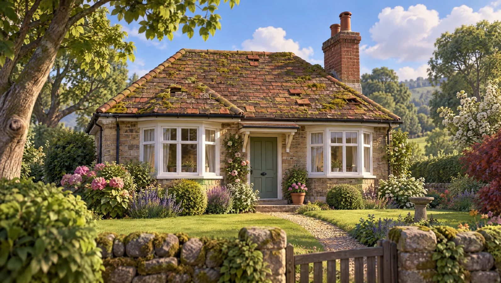
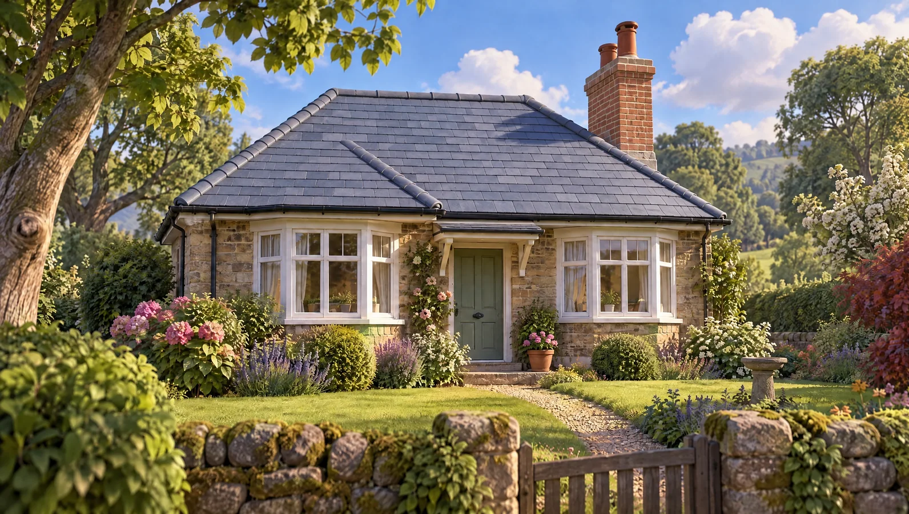

Roofing in Tonypandy, sorted.
Leaks found, fixed and photographed, so you see exactly what we did.
Hi! I'm Lloyd, and I look after homes around Tonypandy.


BeforeThis house needs some love. Tap to see it done.
Tap a job and I'll tell you about it.
Each one has its own page with what's included, guide prices and the questions people ask.

Pick any job above. I'll give you the short version and a guide price.
Build your price with me.
Three quick steps. It's a guide range, the free survey turns it into a fixed written quote.
1 · Pick the roof
2 · How much?
3 · Anything else?
Scaffold shared if you add fascias and gutters: 5% off the extras when you add two or more.

Pick an option and I'll add it up as you go.
Includes our minimum charge for a job this size.
Guide price, confirmed after a free survey. Includes stripping, felt and battens, the new covering and a clean site. Scaffold access and what's under the old roof can move it.
Text me this priceFrom hello to handover.
No hard sell. You already have a guide price, the survey fixes it in writing.

- Inspection
We look at the roof and, where we can, the loft, and take photos so you can see what we see.
- Written quote
You get a fixed written price with scaffold, materials and the method set out line by line, and an honest view on repair versus replacement.
- Access and protection
Scaffold or a tower goes up where needed, and we protect paths, plants and conservatories below.
- The work
We carry out the repair or re-roof, keeping the roof watertight at the end of every day.
- Photos and handover
We clear up, show you photos of the finished work and confirm your guarantee in writing.
Do you give free roof inspections?
We give free quotes and look at the roof from the ground, the loft where possible, and from a ladder where it is safe. For a detailed report on a hard-to-reach roof, access may be needed, and we will tell you the cost beforehand.
Do you take a deposit?
Small repairs are paid on completion. For larger jobs such as re-roofs we may ask for a modest deposit to order materials and book scaffold, with the balance due when the job is finished. It is all set out in the written quote.
Are you insured?
Yes, we carry public liability insurance and can show you the certificate before work starts. Scaffold firms carry their own insurance too. Always ask any roofer for proof of cover before letting them on your roof.
Will you show me what's wrong?
Yes. We take photos of the problem before we start and of the finished repair, so you can see exactly what was done on a part of your house you cannot easily see yourself.
What if it rains during the job?
On re-roofs we only strip what can be made watertight the same day, and we cover open areas overnight. Flat roof membranes and resins need dry conditions, so we may move a start date to protect the work.
Do I need building regulations for roof work?
Replacing more than 25% of a roof covering is controlled work, signed off by building control or a competent person scheme, and may require extra insulation. Small repairs do not need approval. Ask us for our registration details.